syllabi/syllabuses
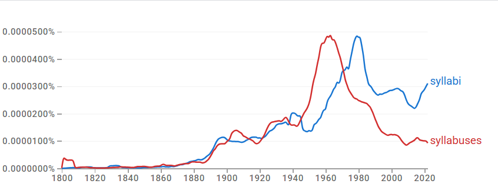
결론
syllabi와 syllabuses는 ‘강의 계획/교육과정’이라는 동일 의미 영역을 공유하면서도 서로 다른 제도적 환경에 배분된다. syllabi는 고등교육·학술 행정의 맥락에, syllabuses는 초·중등 공교육·교육청 중심의 표준화 문서 맥락에 더 강하게 결부된다. 사용 빈도의 중심이 점차 규칙형 쪽으로 이동하는 한편 두 형태가 다른 레지스터에 배분되므로, (규칙형 우세) → 장기 경쟁 → register 분화의 구조다.
연구 결과
과정 및 결론 도달 과정 · 사용 도구
1차 Ngram 사용량 그래프로 두 형태의 위상 변화(고전형 쪽으로 기운 균형)를, 2차 같은 그래프로 장기 경쟁과 교차의 경로를 읽었다. 3차는 Ngram 연어(course/sample/university vs school/examination/grade)와 COCA 맥락 분석(대학·학술 행정 vs 공교육·교육청 문서)으로 제도적 레지스터 차이를 해석했다.
세부 정보 · 구간 별 분절
두 형태 모두 20세기 중반을 전후해 사용량이 증가한다. 초기에는 비슷한 수준에서 병행되다가, 1950년대 이후 규칙형 syllabuses가 급증해 1960년대 전후 정점을 기록한 뒤 빠르게 감소한다. 고전형 syllabi는 1960년대 후반부터 다시 상승해 1970년대 전후 syllabuses를 추월하고 이후 상대적으로 높은 사용량을 유지한다. 현재 두 형태는 공존하되 균형은 고전형 syllabi 쪽으로 기운다.
한 형태가 곧바로 다른 형태를 대체한 것이 아니라, 장기간의 경쟁과 교차를 거친 뒤 한쪽이 우세를 차지하는 경로다.
형용사 연어는 new, detailed, different, various, official 등으로 유사해 뚜렷한 의미 분화가 없다. 명사 연어에서 syllabuses는 school, examination, history, mathematics, level과 결합해 학교 교육과정·과목별 표준 체계에, syllabi는 course와의 결합이 압도적이며 sample, university와 함께 대학 강의·교수 임용·학사 행정에 쓰인다. COCA에서도 syllabi는 고등교육·학술 연구·교수 행정에, syllabuses는 공교육·학년별 세부 내용·교육청 하향식 지침에 결부된다. 의미가 아니라 제도적 환경이 갈리는 register 분화다.
syllabi는 고등교육과 학술 행정의 맥락에서, syllabuses는 초·중등 교육과 표준화된 교육 문서의 맥락에서 주로 사용되며, 두 형태가 서로 다른 제도적 환경에 배분되었다.
참조 이미지 · 연어 그래프와 COCA 용례
이미지를 누르면 크게 볼 수 있어요.
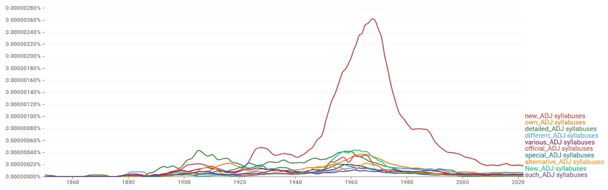
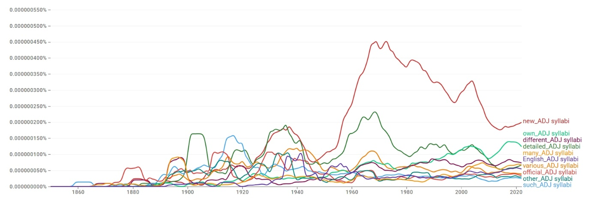
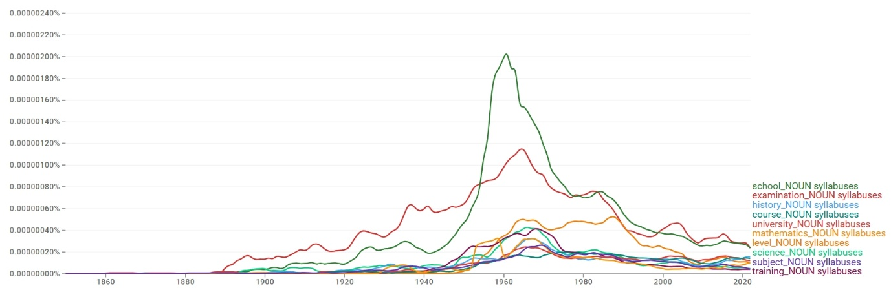
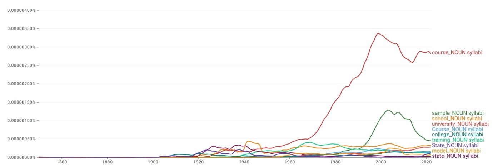
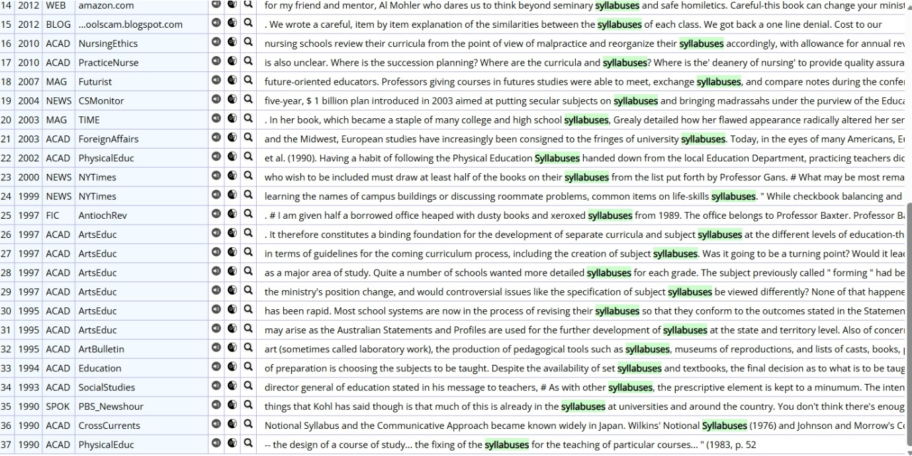
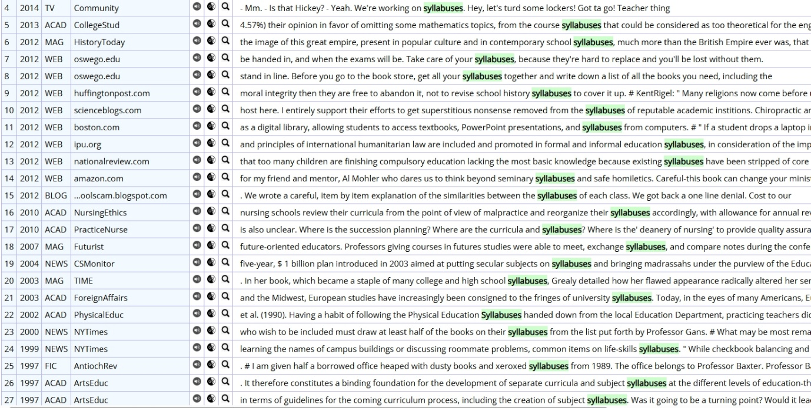
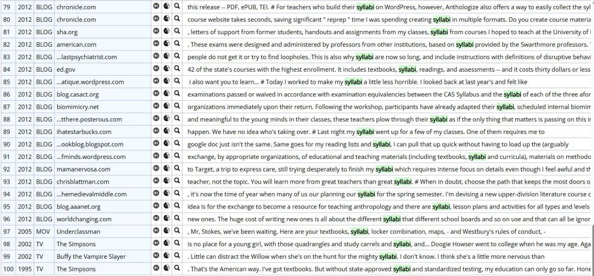
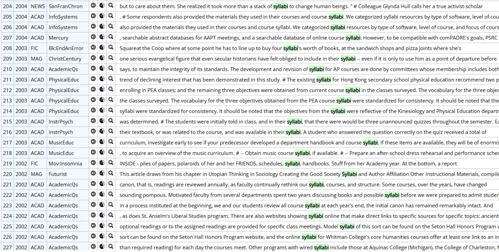
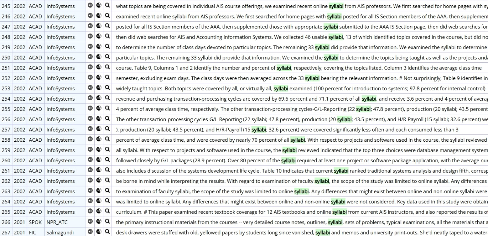
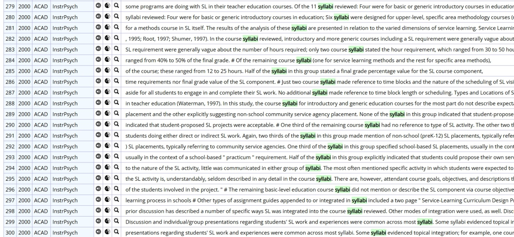
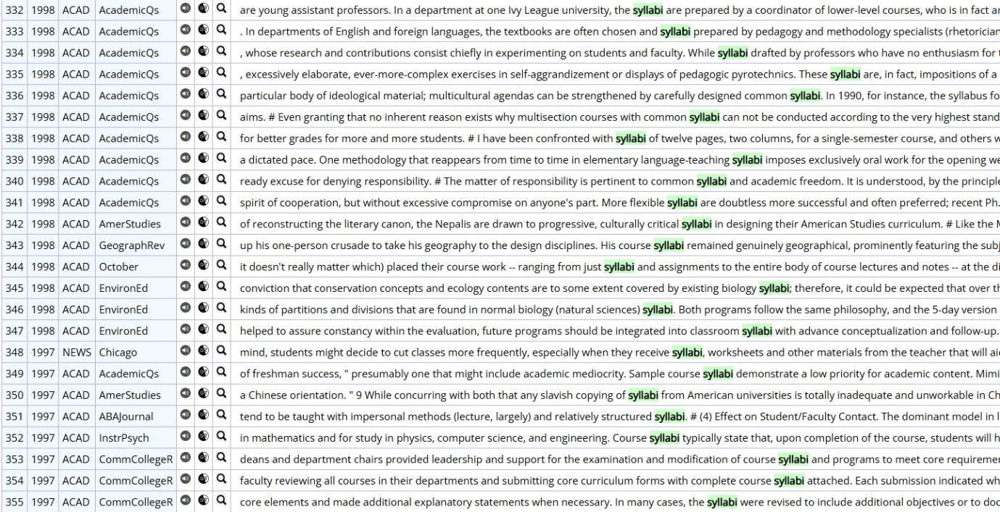
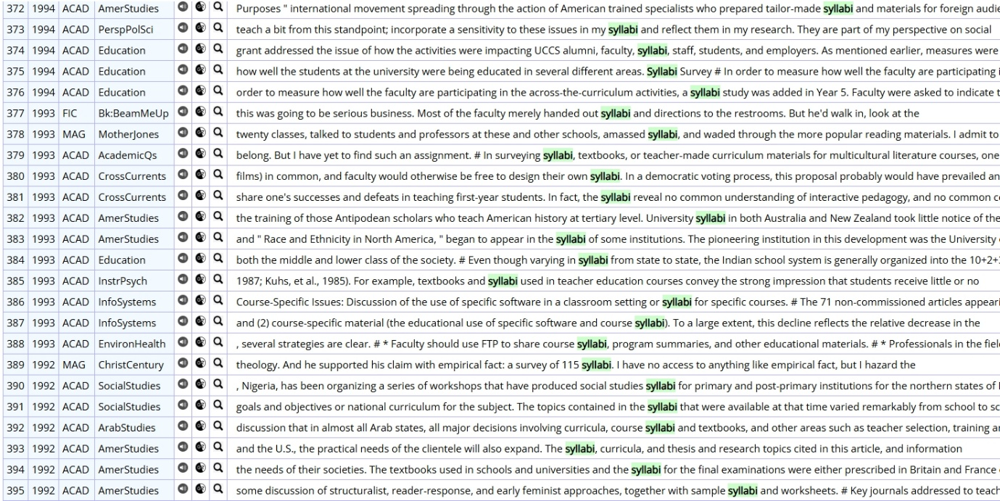
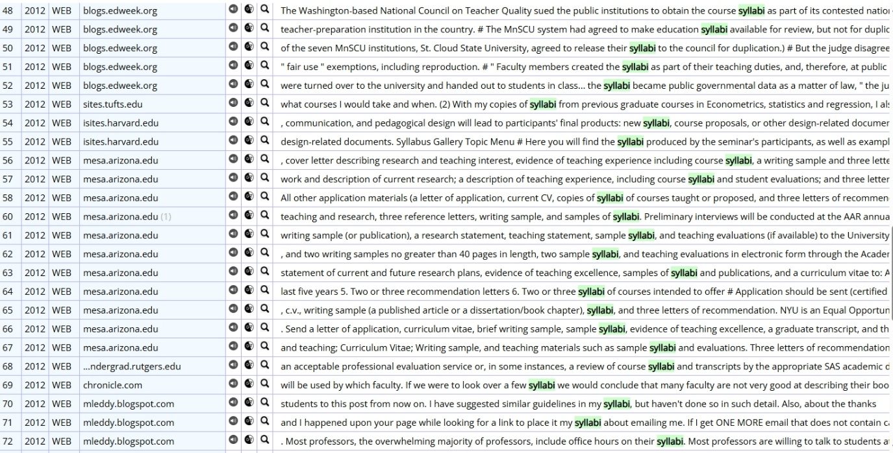
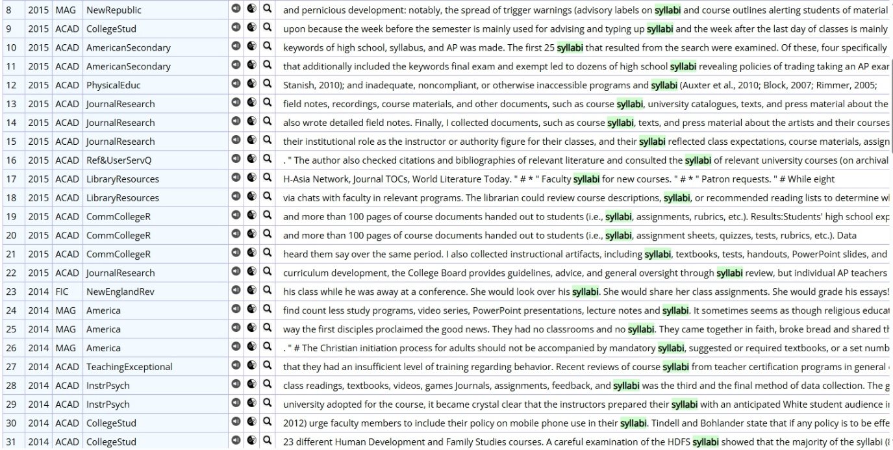